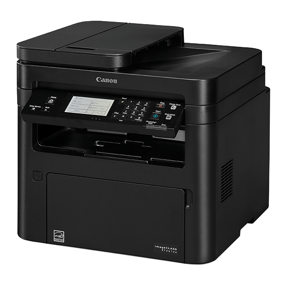

 Многофункциональный черно-белый принтер «4 в 1» располагает функциямиподключения к мобильным устройствам, увеличенной емкостью лотков и6-строчным сенсорным дисплеем и обеспечивает высокое качество искорость создания продукции. В MF267dw используется устройство подачи документов для сканирования в черно-белом режиме со скоростью до 10,6 изображений в минуту и 8,6 изображений в минуту в цвете. Отсканированные файлы можно преобразовать в файлы различных форматов, включая PDF с высоким сжатием и PDF с возможностью поиска (OCR). MF267dw предлагает различные способы печати с мобильного телефона или планшета на устройствах iOS и Android - от приложений до облачных и нативных устройств. Приложение Canon PRINT Business, которое поддерживает обе платформы, предлагает доступ к дополнительным настройкам устройства, а также возможность сканирования с принтера на мобильный телефон или планшет.
ТЕХНИЧЕСКИЕ ХАРАКТЕРИСТИКИ:
Тип устройства: Монохромное лазерное устройство 4 в 1
Поддерживаемые функции: Печать, копирование, сканирование и отправка факсов
Скорость печати / копирования:
Односторонняя: до 28 страниц в минуту (A4)
Двусторонняя: до 17,8 изобр./мин (A4)
Скорость сканирования:
Монохромное одностороннее: 20 изобр./мин (300x600 точек на дюйм)
Цветное одностороннее: 15 изобр./мин (300 x 600 точек на дюйм)
Разрешение сканирования оптическое:
Оптическое: до 600 x 600 точек на дюйм
Улучшенное качество: 9600 x 9600 точек на дюйм
Устройство подачи бумаги (в стандартной комплектации):
Кассета емкостью 250 листов
Универсальный лоток на 1 лист
Устройство автоматической подачи документов на 35 листов
Тип интерфейса: USB 2.0 Hi-Speed, 10BASE-T/100BASE-TX, беспроводной 802.11b/g/n, беспроводное прямое подключение
Дополнительные функции печати:
Поддержка Google Cloud Print
iOS: AirPrint, приложение Canon PRINT Business
Android: сертификация Mopria, подключаемый модуль Canon Print Service, приложение Canon PRINT Business
Расходные материалы:
Картридж 051 (1 700 стр.17)
Картридж 051H (4100 стр.19)
Картридж с барабаном 051 (23 000 стр.21)